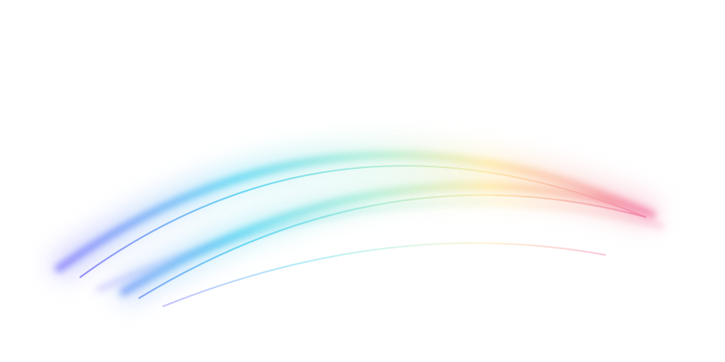

LABMATERIAL EXPERIMENT / 001
OPTICAL GLASS · ILLUSTRATIVE
A STUDY IN TRANSMISSION
光，落在
细节里。
透明的轮廓，
藏着一点斑斓。
01
ROUNDED EDGE
CHROMATIC SURFACE
FACET / MACRO STUDY
01
FIND THE EDGE

透明的轮廓，
藏着一点斑斓。
ROUNDED EDGE
CHROMATIC SURFACE
FACET / MACRO STUDY